v+在线设计软件资源

Adobe Audition CS6是一款功能强大效果出色的多轨录音和音频处理软件，本版本为中文破解版，前身为Cool Edit Pro。可在普通声卡上同时处理多达64轨的音频信号，并且最多支持混合128个声道，创建回路并使用45种以上的数字信号处理效果，具有极其丰富的音频处理效果。而且Audition cs6还支持进行实时预览和多轨音频的混缩合成，在AIF、AU、MP3、Raw PCM、SAM、VOC、VOX、WAV等文件格式之间进行转换，并能够保存为RealAudio格式，配上强大的waves9插件(音频插件)，最适合在照相室、广播设备和后期制作设备方面工作的音频和视频专业人员设计使用！需要的朋友们可以下载试试吧！
Adobe Audition 最初名为 Cool Edit Pro，被 Adobe 收购后改名为 Adobe Audition，是一款强大的声音编辑工具，可以方便地对音频文件进行修改、合并。 无论您是要录制音乐、无线电广播，还是为录像配音，Adobe Audition中的恰到好处的工具均可为您提供充足动力，以创造可能的最高质量的丰富、细微音响。
在 Adobe CS5.5 系列中，Audition 音频编辑器正式取代了 Soundbooth，称其能更满足专家用户的需求。Adobe CS6 系列中的 Adobe Audition CS6 通过其高效的音频混合、控制和编辑性能极大简化了视频、无线电广播、音乐、游戏中的音频制作。
使用说明：Adobe Audition CS6 精简绿色版是 Ansifa 基于 Adobe Audition 官方英文正式版制作而成，已经集成了 5.0.2 升级包与汉化包，为免注册、免激活的完美者特别版，品质保证。
主要功能
Adobe illustrator作为全球最著名的矢量图形软件，以其强大的功能和体贴用户的界面，已经占据了全球矢量编辑 软件中的大部分份额。据不完全统计全球有37%的设计师在使用Adobe Illustrator进行艺术设计。
尤其基于Adobe公司专利的PostScript技术的运用，Illustrator已经完全占领专业的印刷出版领域。无论是线稿的设计者和专业插画家、生产多媒体图像的艺术家、还是互联网页或在线内容的制作者，使用过Illustrator后都会发现，其强大的功能和简洁的界面设计风格只有Freehand能相比。
软件特点
最大特征在于钢笔工具的使用，使得操作简单功能强大的矢量绘图成为可能。[2]它还集成文字处理、上色等功能，不仅在插图制作，在印刷制品（如广告传单、小册子）设计制作方面也广泛使用，事实上已经成为桌面出版（DTP）业界的默认标准。它的主要竞争对手是Macromedia Freehand；但是在2005年4月18日，Macromedia被Adobe公司收购。 所谓的钢笔工具方法，在这个软件中就是通过“钢笔工具”设定“锚点”和“方向线”实现的。一般用户在一开始使用的时候都感到不太习惯，并需要一定练习；但是一旦掌握以后能够随心所欲绘制出各种线条，并直观可靠。
它同时作为创意软件套装Creative Suite的重要组成部分，与兄弟软件——位图图形处理软件Photoshop有类似的界面，并能共享一些插件和功能，实现无缝连接。同时它也可以将文件输出为Flash格式。因此，可以通过illustrator让Adobe公司的产品与Flash连接。
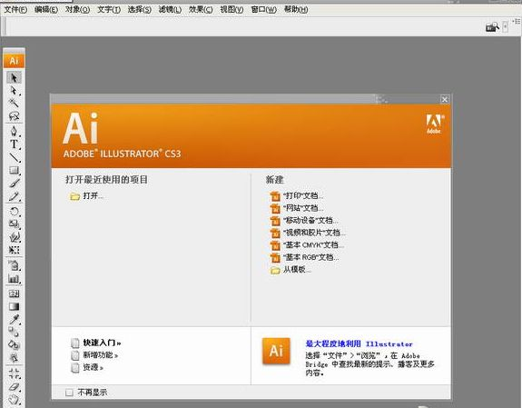功能特性
提供的工具
它是一款专业图形设计工具，提供丰富的像素描绘功能以及顺畅灵活的矢量图编辑功能，能够快速创建设计工作流程。借助Expression Design，可以为屏幕/网页或打印产品创建复杂的设计和图形元素。 它支持许多矢量图形处理功能，拥有很多拥护者，也经历了时间的考验，因此人们不会随便就放弃它而选用微软的Expression Design。提供了一些相当典型的矢量图形工具，诸如三维原型（primitives）、多边形（polygons）和样条曲线（splines），一些常见的操作从这里都能被发现。
特别的界面
其外观颜色不同于Adobe的其他产品，Design是黑灰色或亮灰色外观，这种外观上改变或许是Adobe故意为之，意在告诉用户这是两个新产品，而不是原先产品的改进版。 贝赛尔曲线的使用
Adobe Illustrator最大特征在于贝赛尔曲线的使用，使得操作简单功能强大的矢量绘图成为可能。它还集成文字处理，上色等功能，不仅在插图制作，在印刷制品（如广告传单，小册子）设计制作方面也广泛使用。

Adobe Dreamweaver，简称“DW”，中文名称 "梦想编织者"，是美国MACROMEDIA公司开发的集网页制作和管理网站于一身的所见即所得网页编辑器，DW是第一套针对专业网页设计师特别发展的视觉化网页开发工具，利用它可以轻而易举地制作出跨越平台限制和跨越浏览器限制的充满动感的网页。
功能：借助共享型用户界面设计,在AdobeCreativeSuite4的不同组件之间更快、更明智地工作。使用工作区切换器可以从一个工作环境快速切换到下一个环境。
具体功能：
1、利用AdobeDreamweaverCS6软件中改善的FTP性能，更高效地传输大型文件。更新的“实时视图”和“多屏幕预览”面板可呈现HTML5代码，使您能检查自己的工作。
2、自适应网格。使用响应迅速的CSS3自适应网格版面，来创建跨平台和跨浏览器的兼容网页设计。利用简洁、业界标准的代码为各种不同设备和计算机开发项目，提高工作效率。直观地创建复杂网页设计和页面版面，无需忙于编写代码。
3、改善FTP性能。利用重新改良的多线程FTP传输工具节省上传大型文件的时间。更快速高效地上传网站文件，缩短制作时间。
4、Catalyst集成。AdobeBusinessCatalyst集成，使用Dreamweaver中集成的BusinessCatalyst面板连接并编辑您利用AdobeBusinessCatalyst（需另外购买）建立的网站。利用托管解决方案建立电子商务网站。
5、增强型jQuery移动支持。使用更新的jQuery移动框架支持为iOS和Android平台建立本地应用程序。建立触及移动受众的应用程序，同时简化您的移动开发工作流程。
6、更新的PhoneGap支持。更新的AdobePhoneGap支持可轻松为Android和iOS建立和封装本地应用程序。通过改编现有的HTML代码来创建移动应用程序。使用PhoneGap模拟器检查您的设计。
7、CSS3转换。将CSS属性变化制成动画转换效果，使网页设计栩栩如生。在您处理网页元素和创建优美效果时保持对网页设计的精准控制。
8、更新的实时视图。使用更新的“实时视图”功能在发布前测试页面。“实时视图”现已使用最新版的WebKit转换引擎，能够提供绝佳的HTML5支持。
9、CSS3/HTML5支持。通过CSS面板设置样式，该面板经过更新可支持新的CSS3规则。设计视图现支持媒体查询，在您调整屏幕尺寸的同时可应用不同的样式。使用HTML5进行前瞻性的编码，同时提供代码提示和设计视图渲染支持。
photoshop百度百科很全面： http://baike.baidu.com/view/2929.html?wtp=tt
平面设计
平面设计是PHOTOSHOP应用最为广泛的领域，无论是我们正在阅读的图书封面，还是大街上看到的招帖、海报，这些具有丰富图像的平面印刷品，基本上都需要PHOTOSHOP软件对图像进行处理。
修复照片
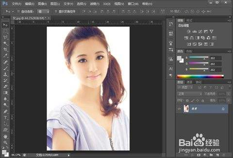PHOTOSHOP具有强大的图像修饰功能。利用这些功能，可以快速修复一张破损的老照片，也可以修复人脸上的斑点等缺陷。
广告摄影
广告摄影作为一种对视觉要求非常严格的工作，其最终成品往往要经过PHOTOSHOP的修改才能得到满意的效果。 影像创意
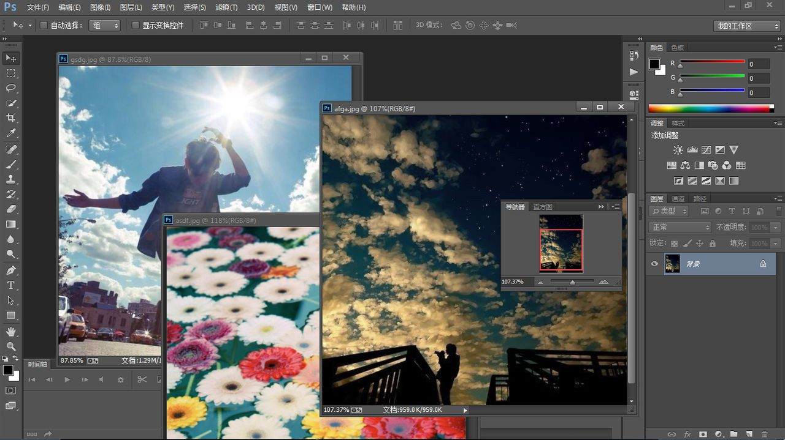影像创意是PHOTOSHOP的特长，通过PHOTOSHOP的处理 PHOTOSHOP 可以将原本风马牛不相及的对象组合在一起，也可以使用“狸猫换太子”的手段使图像发生面目全非的巨大变化。 艺术文字
当文字遇到PHOTOSHOP处理，就已经注定不再普通。利用PHOTOSHOP可以使文字发生各种各样的变化，并利用这些艺术化处理后的文字为图像增加效果。 网页制作
网络的普及是促使更多人需要掌握PHOTOSHOP的一个重要原因。因为在制作网页时PHOTOSHOP是必不可少的网页图像处理软件。 建筑效果图后期修饰
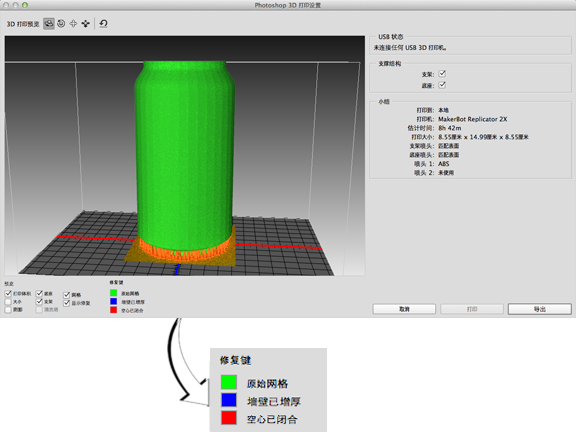在制作建筑效果图包括许多三维场景时，人物与配景包括场景的颜色常常需要在PHOTOSHOP中增加并调整。 绘画
由于PHOTOSHOP具有良好的绘画与调色功能，许多插画设计制作者往往使用铅笔绘制草稿，然后用PHOTOSHOP填色的方法来绘制插画。 除此之外，近些年来非常流行的像素画也多为设计师使用PHOTOSHOP创作的作品。
绘制或处理三维帖图
在三维软件中，如果能够制作出精良的模型，而无法为模型应用逼真的帖图，也无法得到较好的渲染效果。实际上在制作材质时，除了要依靠软件本身具有材质功能外，利用PHOTOSHOP可以制作在三维软件中无法得到的合适的材质也非常重要。 婚纱照片设计
当前越来越多的婚纱影楼开始使用数码相机，这也使得婚纱照片设计的处理成为一个新兴的行业。 视觉创意
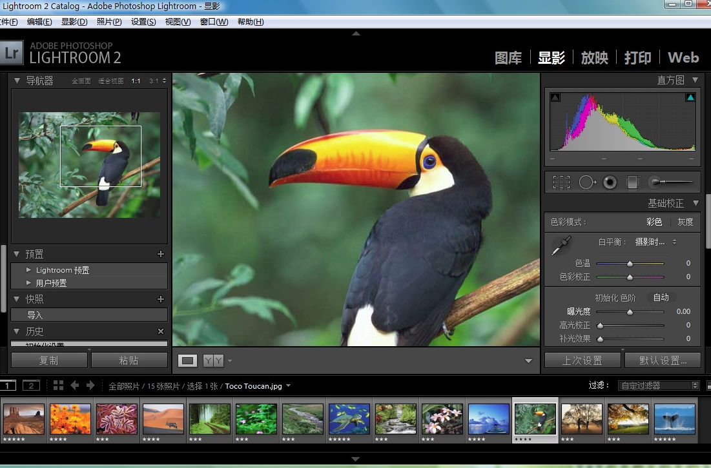视觉创意与设计是设计艺术的一个分支，此类设计通常没有非常明 显的商业目的，但由于他为广大设计爱好者提供了广阔的设计空间，因此越来越多的设计爱好者开始了学习PHOTOSHOP，并进行具有个人特色与风格的视觉创意。 图标制作
虽然使用PHOTOSHOP制作图标在感觉上有些大材小用，但使用此软件制作的图标的确非常精美。 界面设计
界面设计是一个新兴的领域，已经受到越来越多的软件企业及开发者的重视，虽然暂时还未成为一种全新的职业，但相信不久一定会出现专业的界面设计师职业。在当前还没有用于做界面设计的专业软件，因此绝大多数设计者使用的都是PHOTOSHOP。 上述列出了PHOTOSHOP应用的13大领域，但实际上其应用不止上述这些。例如，目前的影视后期制作及二维动画制作，PHOTOSHOP也有所应用的。
Adobe Premiere是一款常用的视频编辑软件，由Adobe公司推出。现在常用的版本有CS4、CS5、CS6、CC、CC 2014、CC 2015、CC 2017以及CC2018版本。Adobe Premiere是一款编辑画面质量比较好的软件，有较好的兼容性，且可以与Adobe公司推出的其他软件相互协作。目前这款软件广泛应用于广告制作和电视节目制作中。 其最新版本为Adobe Premiere Pro CC 2018。
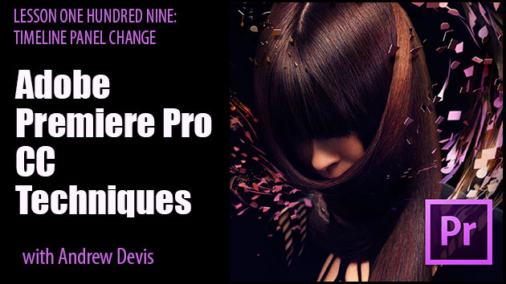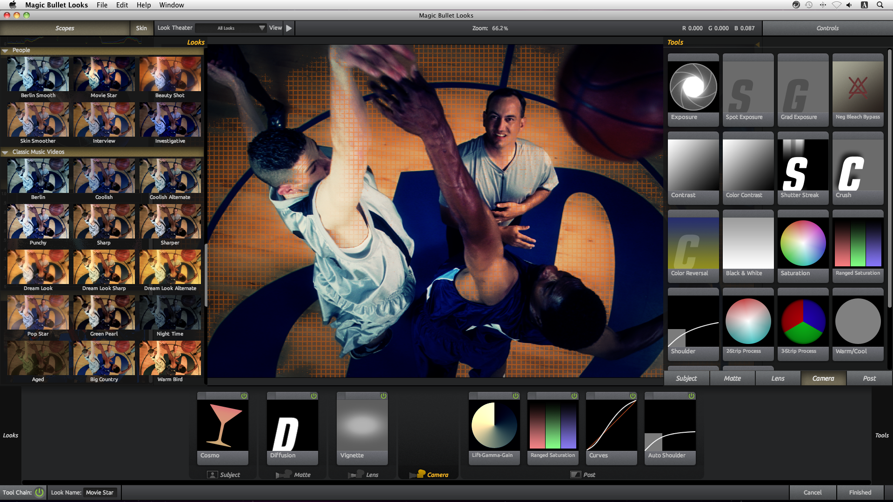Premiere Pro是视频编辑爱好者和专业人士必不可少的视频编辑工具。它可以提升您的创作能力和创作自由度，它是易学、高效、精确的视频剪辑软件。Premiere提供了采集、剪辑、调色、美化音频、字幕添加、输出、DVD刻录的一整套流程，并和其他Adobe软件高效集成，使您足以完成在编辑、制作、工作流上遇到的所有挑战，满足您创建高质量作品的要求。
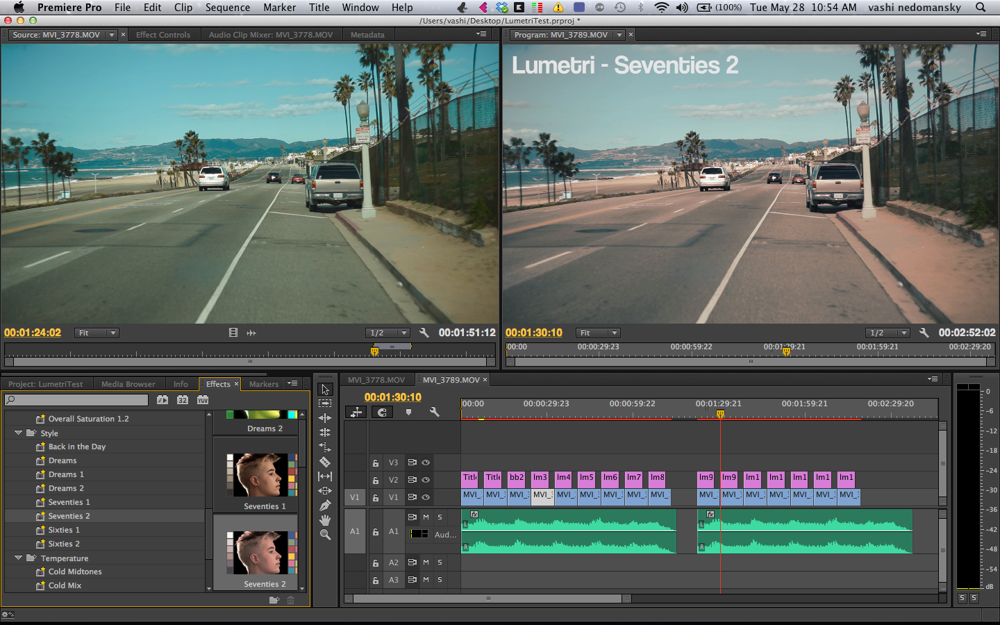区别
AE（After Effects）是Premiere的兄弟产品，它是一套动态图形的设计工具和特效合成软件。 而Premiere是一款剪辑软件，用于视频段落的组合和拼接，并提供一定的特效与调色功能。Premiere和AE可以通过Adobe动态链接联动工作，满足日益复杂的视频制作需求。
InDesign软件是一个定位于专业排版领域的设计软件， 是面向公司专业出版方案的新平台，由Adobe公司于1999年9月1日发布。它是基于一个新的开放的面向对象体系，可实现高度的扩展性，还建立了一个由第三方开发者和系统集成者可以提供自定义杂志、广告设计、目录、零售商设计工作室和报纸出版方案的核心。可支持插件功能。
InDesign软件大大优化了开发周期并且使Adobe可以快速推出平台。事实上，今日通过和InDesign沟通， 一些第三方生产厂家和服务商发表了一些可以立即扩展1.0版功能的重要插件。今天有9个这样的方案已经出售，包括 Shade Tree生产的FR-MZ PS for InDesign，PowrTools生产的PorTable from 和Virginia Systems生产的Sonar Bookends(r) InDex(tm)。 Adobe的InDesign是一个定位于专业排版领域的全新软件，虽然出道较晚，但在功能上反而更加完美与成熟。
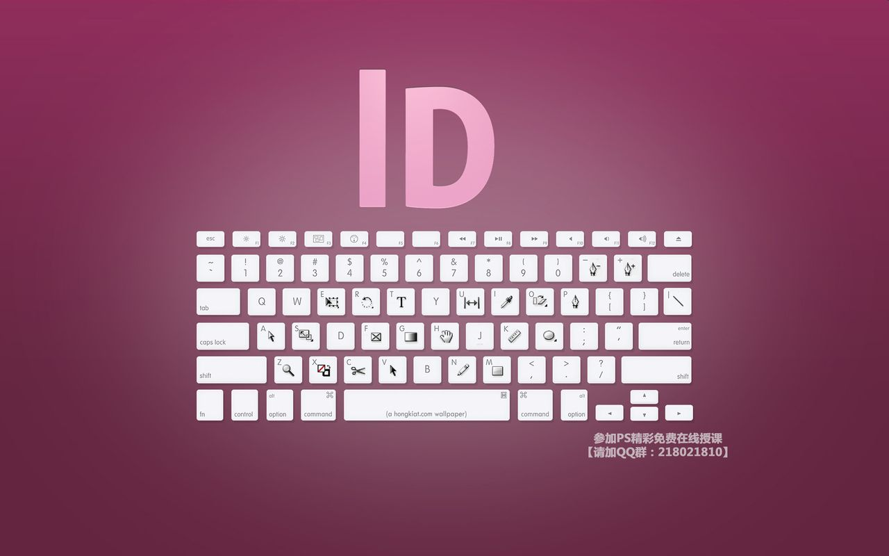InDesign博众家之长，从多种桌面排版技术汲取精华，如将QuarkXPress和Corel－Ventura（著名的Corel公司的一款排版软件）等高度结构化程序方式与较自然化的PageMaker方式相结合，为杂志、书籍、广告等灵活多变、复杂的设计工作提供了一系列更完善的排版功能，尤其该软件是基于一个创新的、面向对象的开放体系（允许第三方进行二次开发扩充加入功能），大大增加了专业设计人员用排版工具软件表达创意和观点的能力，功能强劲不逊于QuarkXPress，比之PageMaker则更是性能卓越；此外Adobe与高术集团、启旋科技合作共同开发了中文InDesign，全面扩展了InDesign适应中文排版习惯的要求，功能直逼北大方正集团（FOUNDER）的集成排版软件飞腾（FIT），可见，InDesign的确非同一般。Quark公司的QuarkXPress（欧美大部分国家地区使用其）和北大方正集团（FOUNDER）的飞腾（FIT）在专业性能上比PageMaker更胜一筹，只是由于种种因素而使得这两种软件得不到广泛应用。例如，Quark公司一直以来投放的重点不是中国国内，因此简体中文MAC版升级慢，PC版本更是少见；而方正飞腾（FIT）主要是配合北大方正集团开发的另外一些软件专供报社、出版社等具有连贯性、系统性的大型对象，另外FIT的后端照排输出也有局限性，即FIT的PS文件只能在昂贵的方正RIP上输出等等，所以普通用户才不得不使用升级快、输出方便但功能不能让专业人士满意的PageMaker。
由于PageMaker是Adobe公司原先从Aldus公司继承过来的，其核心技术相对陈旧，存在许多缺点，单凭PageMaker击败QuarkXPress在印前设计专业领域长期占一席之地，显然是不可能的，于是Adobe公司另辟蹊径在1999年9月1日发布了一个功能更强大的排版软件，作为自从2000年以来来在排版领域受Quark公司压制的反击和完全实现其桌面出版系统龙头老大的位置，这个创新的排版软件就是InDesign。
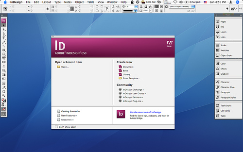目前最新的版本是Adobe InDesign CC 2018，软件使您能够通过内置的创意工具和精确的排版控制。 为打印或数字出版物设计出极具吸引力的页面版式。在页面布局中增添交互性、动画、视频和声音，以提升 eBook 和其他数字出版物对读者的吸引。
Adobe After Effects简称“AE”是Adobe公司推出的一款图形视频处理软件，适用于从事设计和视频特技的机构，包括电视台、动画制作公司、个人后期制作工作室以及多媒体工作室。属于层类型后期软件。
Adobe After Effects软件可以帮助您高效且精确地创建无数种引人注目的动态图形和震撼人心的视觉效果。利用与其他Adobe软件无与伦比的紧密集成和高度灵活的2D和3D合成，以及数百种预设的效果和动画，为您的电影、视频、DVD和Macromedia Flash作品增添令人耳目一新的效果。 Adobe官方最新版本为：Adobe After Effects CC 2018。
图形视频处理
Adobe After Effects软件可以帮助您高效且精确地创建无数种引人注目的动态图形和震撼人心的视觉效果。利用与其他Adobe软件无与伦比的紧密集成和高度灵活的2D和3D合成， 以及数百种预设的效果和动画， 为您的电影、视频、DVD和Macromedia Flash作品增添令人耳目一新的效果。
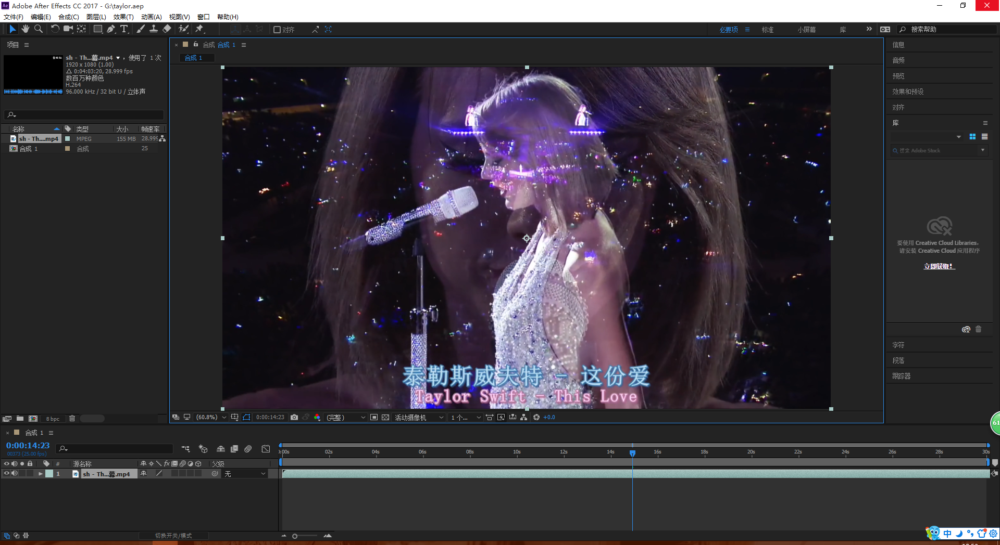强大的路径功能
就像在纸上画草图一样，使用Motion Sketch可以轻松绘制动画路径，或者加入动画模糊。
强大的特技控制
After Effects使用多达几百种的插件修饰增强图象效果和动画控制。可以同其他Adobe软件和三维软件结合 After Effects在导入Photoshop和iIIustrator文件时，保留层信息。 高质量的视频After Effects支持从4*4到30000*30000像素分辨率，包括高清晰度电视(HDTV) 。
多层剪辑
无限层电影和静态画术，使After Effects可以实现电影和静态画面无缝的合成
。高效的关键帧编辑
After Effects中，关键帧支持具有所有层属性的动画，After Effects可以自动处理关键帧之间的变化。
无与伦比的准确性
After Effects可以精确到一个象素点的千分之六，可以准确地定位动画。 高效的渲染效果After Effects可以执行一个合成在不同尺寸大小上的多种渲染，或者执行一组任何数量的不同合成的渲染。
渲染和编码
发送到 Adobe Media Encoder 队列 可使用两个新命令和关联的键盘快捷键将活动的或选定的合成发送到 Adobe Media Encoder 队列
。